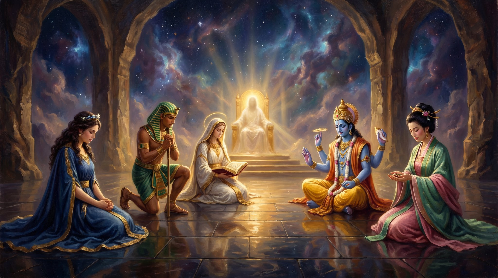

Saga Chronicles
Imagine a world where all the sages, gods, and forces of our deepest religions and philosophies are flesh and blood. They breathe, walk, and talk like you and I. The lapis robes catch the firelight. The carpenter from Nazareth sits quietly among them.
That’s Saga Chronicles.
Since childhood I have been drawn to existential, spiritual, and philosophical questions. In my imagination their stories came alive — and they never threatened my Christian faith. They deepened it. When I read of Inanna entering the gates of hell to sacrifice herself for those she loved, it does not mock the gospel; it confirms it. As Scripture says, the Lamb was slain before the foundations of the world — and I believe His shadow fell backward and forward through time, into every heart that ever hungered for a love willing to die. The other sages caught fragments of that shadow.
Saga Chronicles is not a historical work. This is the work of my musings and imagination — historical fiction in the truest sense, asking what if this had happened, or that. I take liberties. So lay aside your scholarly glasses. Put on your childish dream wings — let us fly to a parallel universe, where gods and sages share their stories. And the greatest story of them all — our true Savior and King — walks alive right there beside them.
If you find beauty in these tales as I do, I hope you’ll enjoy what I am building here.
— Dan